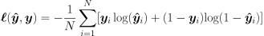

Loss Functions¶
-
class
slugnet.loss.Objective[source]¶ Bases:
objectAn objective function (or loss function, or optimization score function) is one of the two parameters required to compile a model.
-
class
slugnet.loss.BinaryCrossEntropy(epsilon=1e-11)[source]¶ Bases:
slugnet.loss.ObjectiveStandard binary cross-entropy loss function.
Binary cross-entropy is given by

-
class
slugnet.loss.SoftmaxCategoricalCrossEntropy(epsilon=1e-11)[source]¶ Bases:
slugnet.loss.Objective